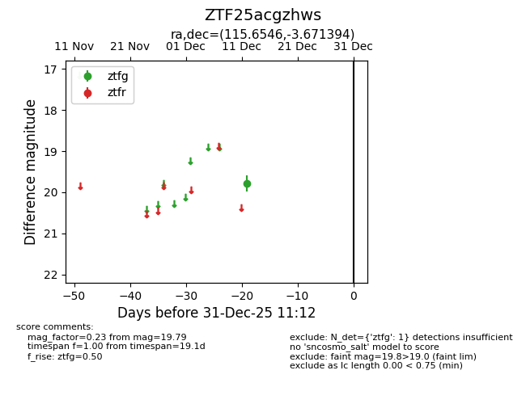
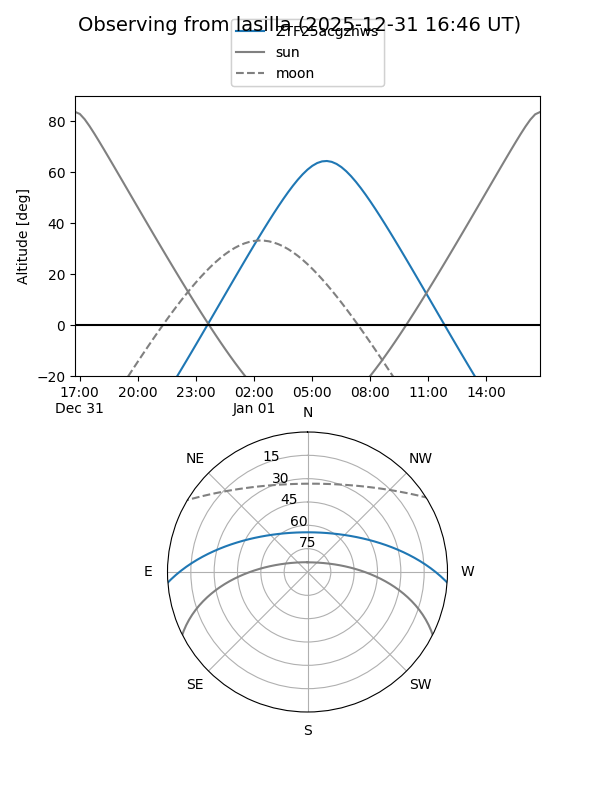
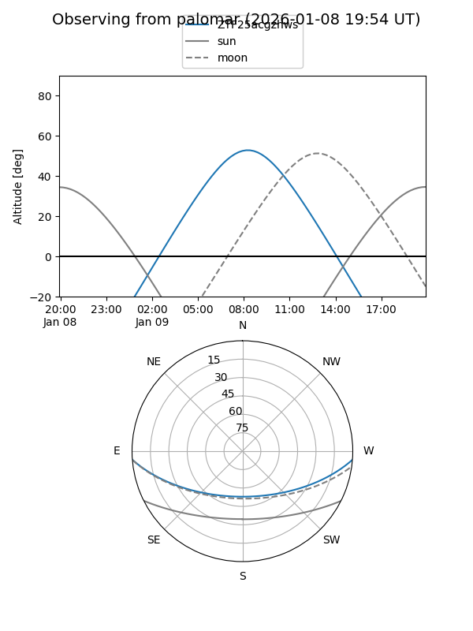

ZTF25acgzhws
Target ZTF25acgzhws at 2025-12-31 18:00
Aliases and brokers:
FINK: link
Lasair: link
ALeRCE: link
alt names
ZTF25acgzhws (ztf,fink_ztf)
Coordinates:
equatorial (ra, dec) = 115.6546,-3.67139
equatorial (HMS+DMS) = 07:42:37.10,-03:40:17.02
galactic (l, b) = (222.1404,+9.64241)
Flags:
Photometry:
last ztfg=19.79
1 ztfg detections
Lightcurve

Visibility


Additional plots